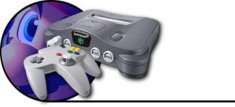
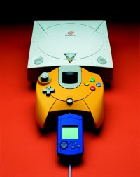

| Why The |
| Playstation 2 |
| Doesn't Matter |
|
 The fastest, most powerful games console on earth (for about twenty minutes) |
Call me cynical, call me old, call me Bob, but I’ve seen it all before. New console, new games. Everyone gets excited and buys them at £100 and £40 a throw and chucks out their old systems. Then six months later another new console comes out. Everyone gets excited again and buys them for £100 and £40 a throw, discarding the old system to the scrap heap of uselessness because it’s not cutting edge. The press for each new system could be recycled every time as follows: |
| “It’s finally here! The NES/ Master System/ Megadrive/ SNES/ Playstation/ Dreamcast/ Saturn/ N64* (delete as applicable) has hit the streets, and it blows everything else away! Superior graphics, amazing sound, bigger and better games, the NES/ Master System/ Megadrive/ SNES/ Playstation/ Dreamcast/ Saturn/ N64* (delete as applicable) has it all! So, chuck out your old NES/ Master System/ Megadrive/ SNES/ Playstation/ Dreamcast/ Saturn/ N64* (delete as applicable) because the NES/ Master System/ Megadrive/ SNES/ Playstation/ Dreamcast/ Saturn/ N64* (delete as applicable) renders it obsolete! It’s now yours to own for a meagre £99.99 RRP, with games starting at £39.99 RRP. Buy one now!” |
|
The fact is that what is happening with the Playstation 2 has happened before, many, many times before. Everyone’s playing away on their consoles, enjoying a selection of superb to dreadful games, when the next one comes along. So everyone buy those and enjoy a selection of superb to dreadful games until the next one comes along, and with the promise of life-changing gamesplaying experiences, out go the old systems. But there is nothing really new under the sun, and each new console exists on a re-hash of every pre-existent idea, sometimes well-executed, more often not. Don’t get me wrong, I’m all for technology moving forward and breakthroughs being made. But let’s all just calm down a minute and realise that it’s just another system. In two years’ time (if not before) it will be old hat, and no-one will care anymore about the Playstation 2; in fact, everyone will have deserted it in favour of the Dolphin or whatever the new kid on the block might be. That’s why the Playstation 2 doesn’t matter, because it’s just the latest addition to possibly the biggest fad the world has ever seen, and like all things faddish, it’ll be gone before you can say “it’s better than my old NES/ Master System/ Megadrive/ SNES/ Playstation/ Dreamcast/ Saturn/ N64* (delete as applicable)”. |
 It's good, but no one's going to buy it. |
 It's crap! |
Breakthroughs in technology are all well and good, but a system is still only as good as its software. We have yet to see a system make a leap in gameplay worthy of its technology and so, I, for one, will be saving myself breath. There’s that, and the fact that it’s got nothing to do with the Speccy and is therefore intrinsically crap. But if I’d just said that, it would have been a very short feature indeed, and all the other stuff about the transitory nature of videogaming and materialism being ultimately self-defeating was worth saying. Just wake me up when it gets some great games I haven’t already played that are being sold for a sensible amount of money, alright? |
|
Previous Page |
| Back to Contents |